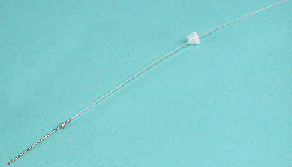

aiguille
L'instrument dispose de 3 aiguilles :
L'aiguille n°1 est réservée aux plasmas échantillons, de contrôle et de calibration.
L'aiguille n°2 est réservée aux réactifs à distribuer avant la première incubation.
L'aiguille n°3 est réservée aux réactifs à distribuer après la première incubation et assure le préchauffage du réactif déclenchant.
Aiguille bras N°2
